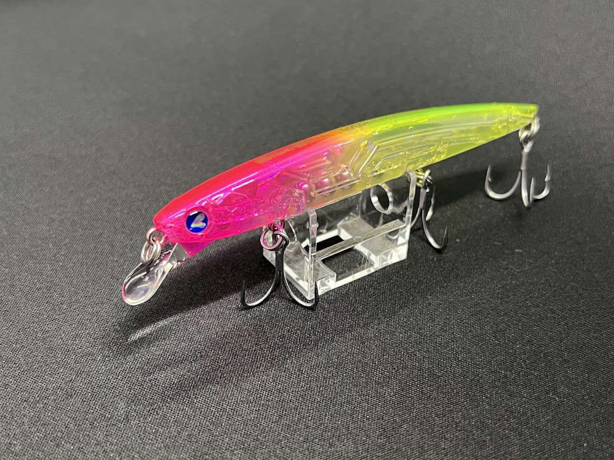

Blooowin! 110S
ブローウィン110SはBlueBlueを代表するシンキングミノー。 ナチュラルなS字アクションと優れたドリフト性能で、流れの中のシーバスを確実に食わせる一本です。
- メーカー
- BlueBlue（ブルーブルー）
- 長さ
- 110mm
- 重さ
- 約14g
- タイプ
- シンキングミノー
- アクション
- S字スラローム
- ターゲット魚種
- シーバス
Blooowin!110Sの特徴
-
S字アクションでナチュラルに誘う
ただ巻きで弱々しいS字を描き、スレたシーバスにも口を使わせます。
-
ドリフト性能が非常に高い
流れに乗せて送り込むだけで、自動的にアクションが発生。
-
表層〜中層を安定してキープ
沈みすぎず浮きすぎないため、橋脚周りや河川で使いやすい。
使い方・得意な状況
河川・港湾・干潟など流れが効くフィールドが得意。 基本はアップクロスにキャストし、流れに乗せてドリフトさせるだけ。 反応がない場合は、軽くトゥイッチを入れて食わせの間を作ります。
ワンポイント
巻きすぎ厳禁。 「動かしすぎない」ことがブローウィン110S最大の釣果アップポイントです。
人気カラー
- チャートバックパール
- ブルーブルー
- ピンクチャートクリア
Blooowin!シリーズ
- Blooowin!110S
- Blooowin!110J
- Blooowin!140S